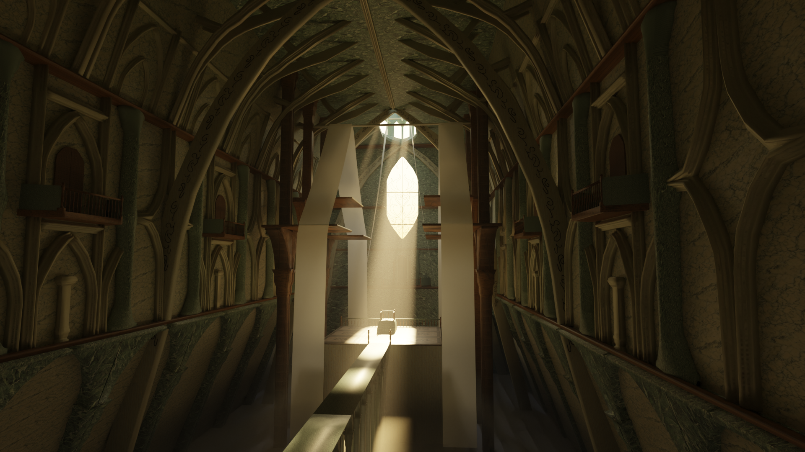
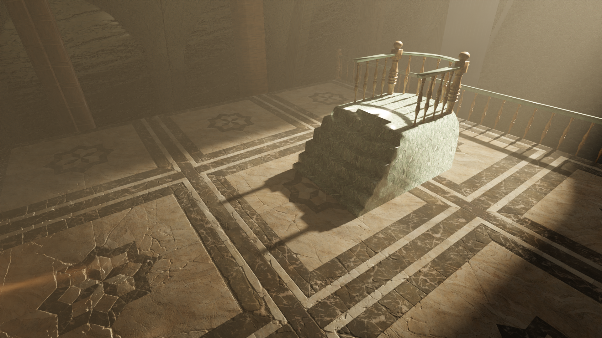
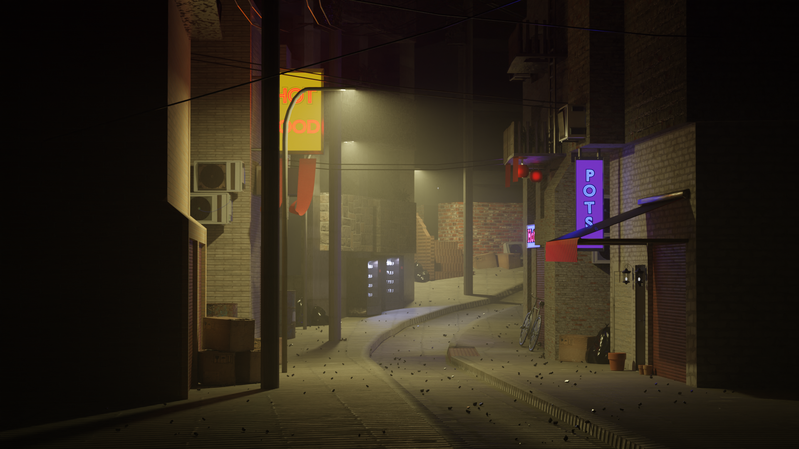
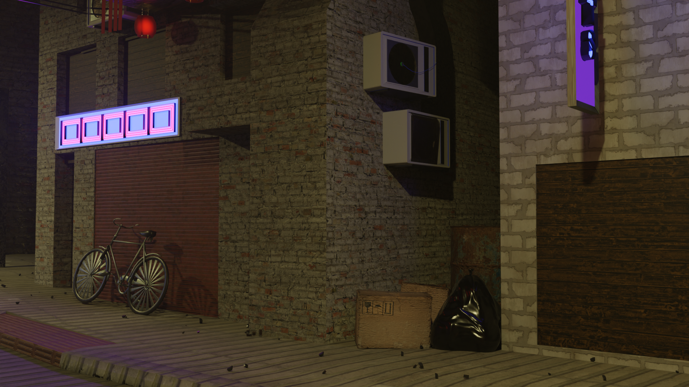
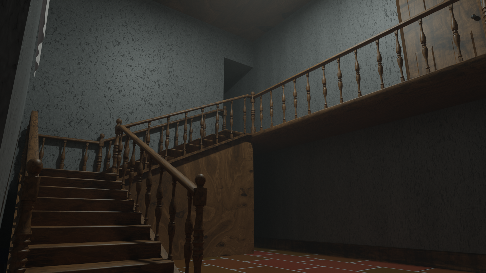
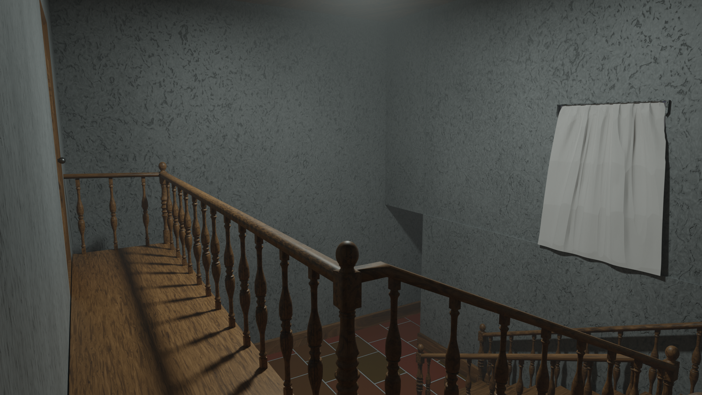
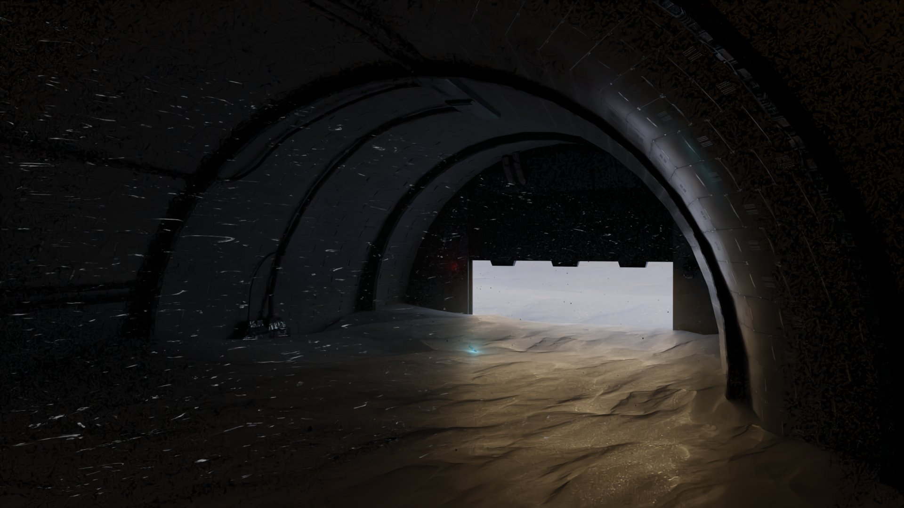
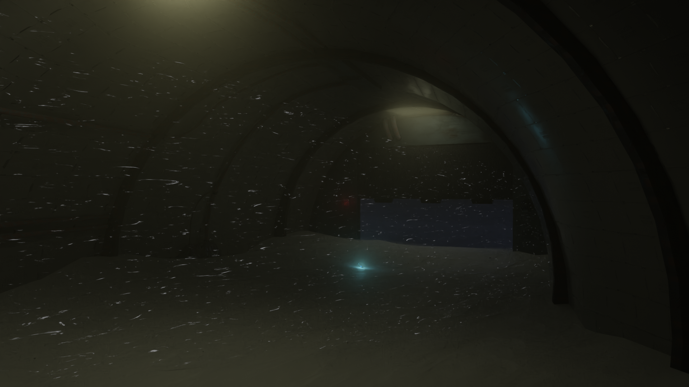

3D Renders

Abandoned Pool
For this project, I aimed to evoke a sense of abandonment and decay through an abandoned pool room. I focused on detailed textures and carefully crafted lighting, including multiple godrays. This was also my first time using an ivy generator with geometry nodes, adding depth and realism to the scene.


Cathedral of Silk
For this project, I explored cathedral-like interiors to evoke a sense of grandeur and authority. Inspired by both real and fictional cathedrals, I designed the space around a central skylight, using it to enhance the atmosphere and guide the viewer’s eye. I paid close attention to texturing and ornamentation, adding details like sweeping cloths and intricate wall and ceiling designs.


Neon Alley
For this project, I created a detailed urban environment, building most props from scratch and integrating them into a cohesive fictional space. I aimed to capture a lived-in feel by designing elements like advertisements, neon signs, and other details that add authenticity.


Bike Park
Inspired by a scene from Bakemonogatari, I recreated its surreal background with a more realistic twist. I focused on crafting a meticulously organized environment where bicycles appear to stretch endlessly, modeling each one with detailed textures and care.


Old Backstairs
In this project, I set out to recreate the atmosphere of an old manor hallway, focusing on the ornate woodwork, especially around the stairs and railings. I used two lighting compositions: one with a cold, grey tone to evoke a sense of eeriness, and another with warm lighting to emphasize the rich textures and craftsmanship of the wood. This dual approach allowed me to highlight both the mood and the intricate detail of the environment.


Snow Base
In this project, I experimented with snow textures within a sci-fi base entrance, aiming to evoke a sense of abandonment. The scene featured an open door and scattered snow piles, with two distinct lighting setups to explore how light affects texture. A warm sunset render revealed subtle snow details, while a colder night scene emphasized desolation and harsh conditions. This contrast highlighted how lighting dramatically changes the mood and perception of the environment.

